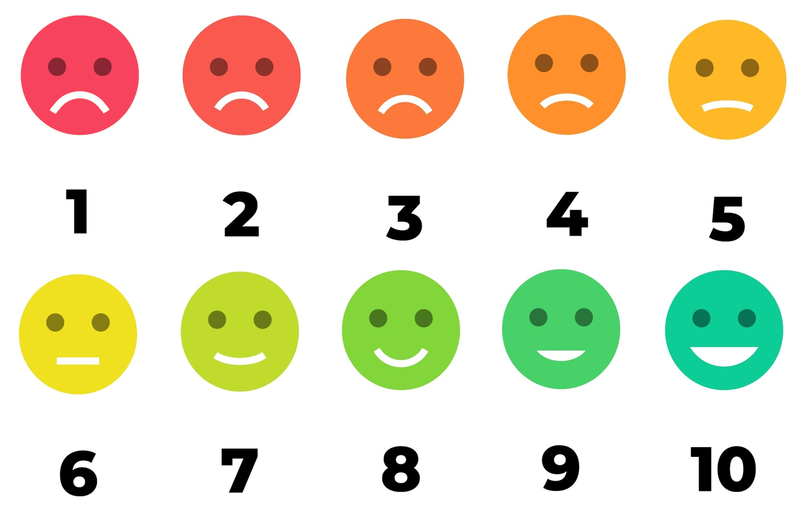

<!DOCTYPE html>
<html>
<head>
  <title>USYD Emotion Regulation</title>
  <link rel="icon" type="image/x-icon" href="favicon.ico">

  <!-- Load jsPsych and jquery-->
  <script src="https://unpkg.com/jspsych@7.3.3"></script>
  <script src='https://cdnjs.cloudflare.com/ajax/libs/jquery/2.1.3/jquery.min.js'></script>
  <script src='https://cdnjs.cloudflare.com/ajax/libs/foundation/5.5.2/js/foundation.min.js'></script>
  <link href="https://unpkg.com/jspsych@7.2.3/css/jspsych.css" rel="stylesheet" type="text/css" />
  <link href="https://unpkg.com/jquery-ui-css@1.11.5/jquery-ui.css" rel="stylesheet" type="text/css" />


  <!-- Load jsPsych plugins-->
  <script src="https://unpkg.com/@jspsych/plugin-instructions@1.1.3"></script>
  <script src="https://unpkg.com/@jspsych/plugin-html-keyboard-response@1.0.0"></script>
  <script src="https://unpkg.com/@jspsych/plugin-image-keyboard-response@1.0.0"></script>
  <script src="https://unpkg.com/@jspsych/plugin-html-button-response@1.0.0"></script>
  <script src="https://unpkg.com/@jspsych/plugin-survey-text@1.0.0"></script>
  <script src="https://unpkg.com/@jspsych/plugin-external-html@1.0.0"></script>
  <script src="https://unpkg.com/@jspsych/plugin-external-html@1.0.0"></script>
  <script src="https://unpkg.com/@jspsych/plugin-preload@1.0.0"></script>
  <script src="https://unpkg.com/@jspsych/plugin-html-slider-response@1.1.2"></script>
  <script src="https://unpkg.com/@jspsych/plugin-browser-check@1.0.0"></script>
  <script src="https://unpkg.com/@jspsych/plugin-canvas-keyboard-response@1.1.2"></script>
  <script src="https://unpkg.com/@jspsych/plugin-call-function"></script>
  <script src="https://unpkg.com/@jspsych/plugin-fullscreen@1.2.0"></script>
  <script src="https://unpkg.com/@jspsych/plugin-survey-html-form@1.0.0"></script>
  <script src="https://unpkg.com/@jspsych/plugin-survey-likert@1.1.2"></script>
  <script src="https://unpkg.com/@jspsych-contrib/plugin-pipe"></script>

  <!-- Load the global environment-->
  <script src="global-env.js"></script>
  <script src="info_sheets.js"></script>
  

  <!-- Custom Plugins-->


  <script src="custom-plugins/ER-free.js"></script>
  <script src="custom-plugins/text-counter.js"></script>

  <!-- Some custom CSS-->
  <link rel="stylesheet" href="https://cdn.jsdelivr.net/npm/bootstrap@4.6.1/dist/css/bootstrap.min.css">


</head>
<body></body>
<script>


//////////////////////////////////
//         Gloabl Settings      //
//////////////////////////////////

// Initalise jsPsych
  const jsPsych = initJsPsych({
   on_interaction_data_update: function(data) {
     if(data.event == 'fullscreenexit' & pilot != 'true'){in_fullscreen = false}

   },
 on_finish: function(data) {
   //window.location = redirect_link;
  jsPsych.data.get().localSave('csv','mydata.csv');
}
})


// Settings 

  const DataPipe_ID = "OhSX9i50e1M6" // The DataPipe ID for where the data should be stored

  const sona_experiment_id = "NA"; // The SONA experiment ID 
  const sona_credit_token = "NA"; // The SONA credit token 
  const Prolific_redirect = "CHGWKNI0"; // The Prolific redirect link (to credit)
  const Prolific_failed_check = "C13PIUOF"; // The Prolific redirect link to NOT credit (manual review)
  const task_time = 12; // time in minutes for the PIS 


// Global parameters 
  var trialnum = 1;
  var blocknum = 1;
  var cueCounter = 0;
  var no_trials = 30;

// Version
  // There are two version of the task one that provides continuous feedback (a 1-10 emotion scale) and one that provides binary feedback (correct vs incorrect). Choose below:
  const continuous_feedback = true; // if true then uses continuous feedback version

  const mean_high = 8; // ignored if binary feedback
  const mean_low = 3; // ignored if binary feedback
  const sd = 1.5; // ignored if binary feedback
  const pos_freq_high = 20; // ignored if continuous feedback. Should be the N of positve outcomes for high density condition
  const pos_freq_low = 10; // ignored if continuous feedback.  Should be the N of positve outcomes for low density condition
  feedbackArray = null; // leave at null to start


pilot_fraction = 1; //set to 1 to not pilot or greater than 1 to speed up

/////////////////////////////////
// Instructions/
/////////////////////////////////


var instructions = {
  type: jsPsychInstructions,
  pages: [
    '<h1>Welcome to the experiment!</h1> In this study we are interested in how students deal with their negative emotions while they are learning, and which emotion regulation strategies teachers can use to help them.',
    'To investigate how teachers help students deal with their negative emotions, in the study, you will be matched with another participant on Prolific. One of you will be randomly assigned to be the <strong>teacher</strong> and the other will be assigned to be the <strong>learner.</strong>',
    'The <strong>learner</strong> will perform a series of '+ no_trials + ' difficult math problems under time pressure. This time pressure has been designed to make the learner feel stressed. The <strong>teacher</strong> will not perform the math problems, but instead will be able to provide advice to the <strong>learner</strong> to help them deal with any negative emotions that arise.',
    ],
  show_clickable_nav: true
}


var instructions2 = {
  type: jsPsychInstructions,
  pages: function(){
    if(continuous_feedback == true) return ([
      'You have been assigned to be the <span style="color: #FF0000;"><strong>teacher</strong></span>.<br>You will provide advice to your partner to try and help them deal with the stressful math problems. Your partner will provide feedback about how they are feeling as they progress through the problems.',
      'You <strong>CAN NOT</strong> provide advice to your partner for every problem. On some trials you will only to be able to observe how your partner feels after performing the math problem, on other trials you will be able to provide them with advice.',
      '<p>After your partner performs each math problem they will rate how they are feeling on the 10-point scale below, with lower scores indicating that they are feeling worse and higher scores indicating that they are feeling better. <br>You will be able to see how your partner indicates that they are feeling.</p>',
      'Your advice should aim to help them regulate their emotions, rather than directly help them with the math problems. So that you and your partner can progress through the study at a reasonable rate, you will only have 40 seconds to provide advice on trials on which you do so.',
      'When you are ready to begin, click "Next".'
      ])

      if(continuous_feedback == false) return ([
        'You have been assigned to be the <span style="color: #FF0000;"><strong>teacher</strong></span>.<br>You will provide advice to your partner to try and help them deal with the stressful math problems. You will receive feedback about how your partner is performing as they progress through the problems.',
        'You <strong>CAN NOT</strong> provide advice to your partner for every problem. On some trials you will only to be able to observe how your partner performs on the problem, on other trials you will be able to provide them with advice.',
        'Your advice should aim to help them regulate their emotions, rather than directly help them with the math problems. So that you and your partner can progress through the study at a reasonable rate, you will only have 40 seconds to provide advice on trials on which you do so.',
        'When you are ready to begin, click "Next".'
        ])
    },
  show_clickable_nav: true
}

var instructions3 = {
  type: jsPsychInstructions,
  pages: [
    'Please answer a few brief questions about the study. Answer as honestly as possible (you will not be penalised because of your responses)'
    ],
  show_clickable_nav: true
}

var awareness_check1 = {
  type: jsPsychSurveyText,
  questions: [
    {prompt: 'What did you think this study was about?', required: true, rows: 4},
    ]
}

var awareness_check2 = {
  type: jsPsychSurveyText,
  questions: [
    {prompt: 'Did you notice anything odd in this study? If so, please describe it below', required: true, rows: 4},
    ]
}


var preload = {
  type: jsPsychPreload,
  images: ['img/1.png','img/2.png', 'img/3.png', 'img/4.png', 'img/5.png', 'img/6.png', 'img/7.png', 'img/8.png', 'img/9.png', 'img/10.png', "img/feelings.png", "img/tick.png", "img/cross.jpeg"]
}


/////////////////////////////////
// "Matching"/
/////////////////////////////////

const match_spin = {
  type: jsPsychHtmlKeyboardResponse,
  stimulus: '<div class="spinner-border text-warning"></div><br>' +
  'Matching you with a partner....<br>Please wait this may take up to a minute',
  choices: "NO_KEYS",
  trial_duration: 10000/pilot_fraction
}

const matched_trial = {
  type: jsPsychHtmlKeyboardResponse,
  stimulus: '<div class="spinner-border text-success"></div><br>' +
  'Matched!',
  choices: "NO_KEYS",
  trial_duration: 1500/pilot_fraction
}


/////////////////////////////////
// A trial /
/////////////////////////////////


var a_trial = {
  data: function(){
    return {trialnum: trialnum, blocknum: blocknum}
  },
  timeline: [


// Advice
  {
    timeline: [
      {type: ERfreeResponse,
      stimulus: "<span id='clock'>0:40</span><br><br><h2>Help your partner</h2><p>Your partner is about to perform the next math problem</p><p>Use the textbox below to provide advice:</p>",
      trial_duration: 40000/pilot_fraction,
      on_load: function(){
     var wait_time = .66667 * 60 * 1000; // in milliseconds
     var start_time = performance.now();

     interval = setInterval(function(){
       var time_left = wait_time - (performance.now() - start_time);
       var minutes = Math.floor(time_left / 1000 / 60);
       var seconds = Math.floor((time_left - minutes*1000*60)/1000);
       var seconds_str = seconds.toString().padStart(2,'0');
       document.querySelector('#clock').innerHTML = minutes + ':' + seconds_str
     }, 250)
   },
   on_finish: function(data){
    clearInterval(interval);
    cueCounter = cueCounter + 1
    data.trial_type = "Stimulus Response";
  }
}
],
    conditional_function: function(){
      if(jsPsych.timelineVariable('give_advice') === "yes"){
        return true;
      } else {
        return false;
      }
    }
  },


// Observation
  {
    timeline: [
    {
      type: jsPsychHtmlButtonResponse,
      stimulus: '<h2>Observation</h2><p>Your partner is about to perform the next math problem</p><p>On this trial <strong>you are unable to provide advice</strong></p>',
      trial_duration: 40000/pilot_fraction,
      choices: ['Continue'],
      on_finish: function(data){
       data.trial_type = "Stimulus Response";
     }
   }
   ],
    conditional_function: function(){
      if(jsPsych.timelineVariable('give_advice') === "yes"){
        return false;
      } else {
        return true;
      }
    }
  },


// Viewing

  {
    type: jsPsychHtmlKeyboardResponse,
    stimulus: '<div class="spinner-border text-muted"></div><br>' +
    'Your partner is performing the math problem',
    choices: "NO_KEYS",
    on_finish: function(data){
     data.trial_type = "Viewing";
   },
   trial_duration: function(){
    x = jsPsych.randomization.sampleWithReplacement([4000,5000, 6000, 7000, 8000, 9000, 10000], 1)
    return(x/pilot_fraction)
  }
},


// Continuous Feedback
{
  timeline: [
  {
    type: jsPsychImageKeyboardResponse,
    stimulus: function(){

     if(exp_cond == "High"){

      x = Math.round(jsPsych.randomization.sampleNormal(mean_high,sd))
      if(x > 10){x = 10}
        if(x < 1){x = 1}
          return(feedbackArray[x-1])
      }


      if(exp_cond == "Low"){

       x = Math.round(jsPsych.randomization.sampleNormal(mean_low,sd))
       if(x > 10){x = 10}
         if(x < 1){x = 1}
           return(feedbackArray[x-1])
       }

     },
     choices: "NO_KEYS",
     prompt: "<p>This is how your partner indicated feeling</p>",
     trial_duration: 3000/pilot_fraction,
     stimulus_height: 150,
     stimulus_width: 100,
     on_finish: function(data){
       data.trial_type = "Feedback";
     },

   }
   ],
  conditional_function: function(){
    if(continuous_feedback === true){
      return true;
    } else {
      return false;
    }
  }
},


// Binary Feedback
{
  timeline: [
  {
    type: jsPsychImageKeyboardResponse,
    stimulus: function(){

  // Feedback for cue trials
      if(jsPsych.timelineVariable('give_advice') == "yes"){
        if(feedbackArray_cue[cueCounter-1] == "pos") return "img/tick.png";
        if(feedbackArray_cue[cueCounter-1] == "neg") return "img/cross.jpeg";
      }

// Feedback for no cue trials
      if(jsPsych.timelineVariable('give_advice') == "no"){
        if(feedbackArray_nocue[trialnum-cueCounter- 1] == "pos") return "img/tick.png";
        if(feedbackArray_nocue[trialnum-cueCounter-1] == "neg") return "img/cross.jpeg";
      }

    },
    choices: "NO_KEYS",
    prompt: function(){

  // Feedback for cue trials
      if(jsPsych.timelineVariable('give_advice') == "yes"){
        if(feedbackArray_cue[cueCounter-1] == "pos") return "<br>Your partner answered <span style = 'color:green;'>correctly</span>";
        if(feedbackArray_cue[cueCounter-1] == "neg") return "<br>Your partner answered <span style = 'color:red;'>incorrectly</span>";
      }

// Feedback for no cue trials
      if(jsPsych.timelineVariable('give_advice') == "no"){
        if(feedbackArray_nocue[trialnum-cueCounter- 1] == "pos") return "<br>Your partner answered <span style = 'color:green;'>correctly</span>";
        if(feedbackArray_nocue[trialnum-cueCounter-1] == "neg") return "<br>Your partner answered <span style = 'color:red;'>incorrectly</span>";
      }

    },
    trial_duration: 3000/pilot_fraction,
    stimulus_height: 150,
    stimulus_width: 100,
    on_finish: function(data){
     data.trial_type = "Feedback";
   },

 }
 ],
  conditional_function: function(){
    if(continuous_feedback === false){
      return true;
    } else {
      return false;
    }
  }
},


// Summary trial to store all the data typically required (nothing is displayed to the particpant) and do the staircasing
{
  type: jsPsychCallFunction,
  func: function(data){

  },
  on_finish: function(data){
    data.rt = jsPsych.data.get().filter({trial_type: "Stimulus Response"}).last().values()[0].rt;
    data.response = jsPsych.data.get().filter({trial_type: "Stimulus Response"}).last().values()[0].response;
    data.give_advice = jsPsych.timelineVariable('give_advice');
    data.feedback = jsPsych.data.get().filter({trial_type: "Feedback"}).last().values()[0].stimulus;
    data.trial_type = "Summary Trial"
    data.cueCounter = cueCounter;
    trialnum++;


  }
},


],
timeline_variables: [
  {give_advice: "yes"},
  {give_advice: "no"},
  ],
randomize_order: true
}


/////////////////////////////////
// Effiacy Rating /
/////////////////////////////////


if(continuous_feedback == true){
  var efficacy = {
    type: jsPsychHtmlSliderResponse,
    on_finish: function(data){
     data.trial_type = "Efficacy";
     jsPsych.data.addProperties({efficacy: data.response});
   },
   stimulus: `<p>On a scale from -100% to 100%, rate how effective you think you were at making your partner feel better compared to doing nothing, if at all</p>
   <div style="width:240px; float: left;">
   </div>`,
   min: -100,
   max: 100,
   slider_start: 0,
   prompt: '<i>Note that intermediate negative values indicate that you think your assistance actually made your partner feel worse<br> whereas intermediate positive values indicate that your assistance was effective in improving how your partner felt.</i><br><br>',
   require_movement: true,
   labels: ['-100% - I made them feel a lot worse','0% - I had no effect on how they felt' ,`+100% - I made them feel a lot better`]
 };
}


if(continuous_feedback == false){
  var efficacy = {
    type: jsPsychHtmlSliderResponse,
    on_finish: function(data){
     data.trial_type = "Efficacy";
     jsPsych.data.addProperties({efficacy: data.response});
   },
   stimulus: `<p>On a scale from -100% to 100%, rate how effective you think you were at helping your partner perform better on the math problems compared to doing nothing, if at all</p>
   <div style="width:240px; float: left;">
   </div>`,
   min: -100,
   max: 100,
   slider_start: 0,
   prompt: '<i>Note that intermediate negative values indicate that you think your assistance actually made your partner perform worse<br> whereas intermediate positive values indicate that your assistance was effective in improving how your partner&apos;s performance.</i><br><br>',
   require_movement: true,
   labels: ['-100% - I made them perform a lot worse','0% - I had no effect on how they performed' ,`+100% - I made them perform a lot better`]
 };
}


/////////////////////////////////
// Procedure and Saving /
/////////////////////////////////


const training_block = {
  timeline: [a_trial],
  repetitions: no_trials/2,
  on_timeline_start: function(){
    phase = "Training";
  }
}


// Save data and redirect [shouldn't need to edit below]


// Capture any url paramaters
const PROLIFIC_PID = jsPsych.data.getURLVariable('PROLIFIC_PID');
const SONAID = jsPsych.data.getURLVariable('SONAID');
const pilot = jsPsych.data.getURLVariable('pilot');


// Redirect based on SONA vs Prolific

    // SONA
if(typeof SONAID != 'undefined'){

  jsPsych.data.addProperties({participant_id: SONAID});
  jsPsych.data.addProperties({Source: "SONA"});

  redirect_link = "https://sydneypsych.sona-systems.com/webstudy_credit.aspx?experiment_id="+sona_experiment_id+"&credit_token="+sona_credit_token+"&survey_code=" + SONAID + "&id=" + SONAID;
    attention_redirect_link = "https://sydney.au1.qualtrics.com/jfe/form/SV_3h2qh8pBAnv00QK?SONAID=" + SONAID + "accuracy=" + jsPsych.data.get().filter({trial_type: "Summary Trial"}).select('correct').mean(); // A seperate link for those who fail the attention check


  }

    // PROLIFIC
  if(typeof SONAID === 'undefined'){

    jsPsych.data.addProperties({participant_id: PROLIFIC_PID});
    jsPsych.data.addProperties({Source: "Prolific"});

    redirect_link ="https://app.prolific.com/submissions/complete?cc=" + Prolific_redirect;
    attention_redirect_link ="https://app.prolific.co/submissions/complete?cc=" + Prolific_failed_check; // A seperate link for those who fail the attention check
  }


  // Save to OSF
  const subject_id = jsPsych.randomization.randomID(10);
  const filename = `${subject_id}.csv`;


  const save_data = {
    type: jsPsychPipe,
    action: "save",
    experiment_id: DataPipe_ID,
    filename: filename,
    data_string: ()=>jsPsych.data.get().csv()
  };


// Create Experiment

  condition_1_timeline = [preload, participant_info_paid, demographics, instructions,  match_spin, matched_trial,  instructions2, training_block, efficacy, instructions3, awareness_check1, awareness_check2, save_data, DEBRIEF_SONA];


  async function createExperiment(){
    const condition = await jsPsychPipe.getCondition(DataPipe_ID);
    jsPsych.data.addProperties({condition: condition});
    if(condition == 0) { timeline = condition_1_timeline; exp_cond = "Low"}
    if(condition == 1) { timeline = condition_1_timeline; exp_cond = "High"}
    jsPsych.data.addProperties({condition: exp_cond});


    // Feedback Arrays
    if(continuous_feedback == true) feedbackArray =  ['img/1.png','img/2.png', 'img/3.png', 'img/4.png', 'img/5.png', 'img/6.png', 'img/7.png', 'img/8.png', 'img/9.png', 'img/10.png'];
    if(continuous_feedback == false) {

    // High Density Feedback
      if(exp_cond == "High"){
        var posArray = jsPsych.randomization.repeat(["pos"], pos_freq_high*0.5);
        var negArray = jsPsych.randomization.repeat(["neg"], (no_trials-pos_freq_high)*0.5);
        var shuffledArray = posArray.concat(negArray);
        feedbackArray_cue = jsPsych.randomization.repeat(shuffledArray, 1);
        feedbackArray_nocue = jsPsych.randomization.repeat(shuffledArray, 1);
      }


      // Low Density Feedback
      if(exp_cond == "Low"){
        var posArray = jsPsych.randomization.repeat(["pos"], pos_freq_low*0.5);
        var negArray = jsPsych.randomization.repeat(["neg"], (no_trials-pos_freq_low)*0.5);
        var shuffledArray = posArray.concat(negArray);
        feedbackArray_cue = jsPsych.randomization.repeat(shuffledArray, 1);
        feedbackArray_nocue = jsPsych.randomization.repeat(shuffledArray, 1);
      }
    }


    jsPsych.run(timeline);
  }


  createExperiment();


</script>
</html>


